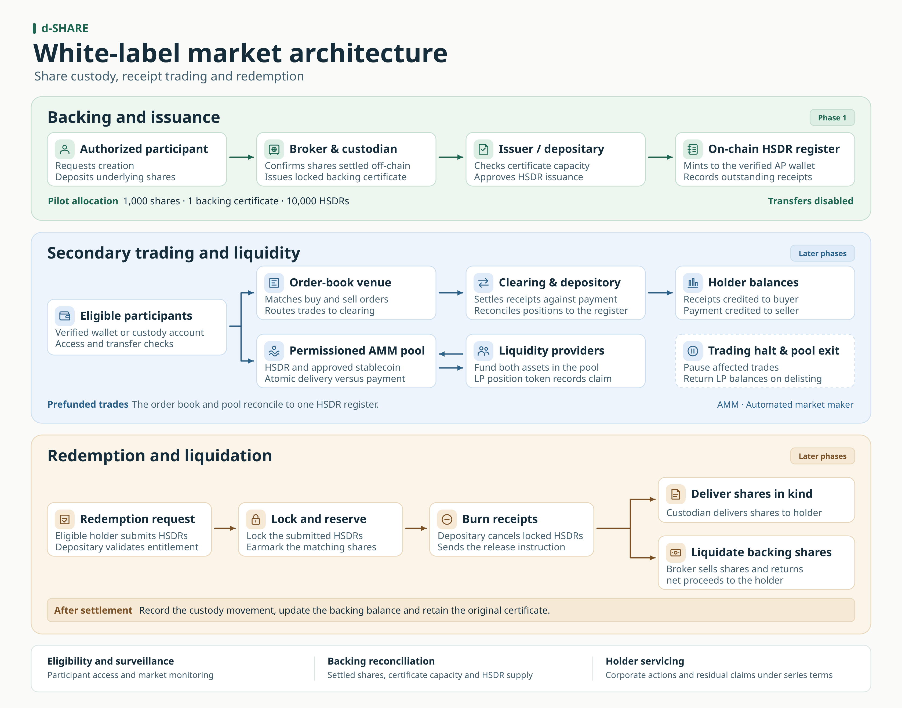

Programme scope
Phase 1 proves the primary creation path for one underlying security, one programme custody account, one HSDR series, and a verified AP. The AP is both depositor and initial receipt holder. Receipt transfers, redemption, cash settlement and distributions are disabled or absent in the Phase 1 pilot.
| Capital DLC stage | Phase 1 responsibility | Programme extension |
|---|---|---|
| A · Activate | Onboard and approve the AP and bind its receiving wallet. | Apply the same identity and eligibility model to future participants and intermediaries. |
| C · Channel | Accept already-acquired shares through the custody settlement rail. AP acquisition funding sits outside the pilot. | Add funding, FX and payment-rail adapters if needed. |
| T · Transform | Allocate settled backing, issue the custody certificate and mint the HSDRs. | Support additional securities, market-specific series terms and authoritative tokenized backing. |
| O · Orchestrate | Run approval, finality, position reporting and reconciliation. | Add eligible transfers, secondary delivery versus payment, corporate actions and record-date positions. |
| R · Return | Reserve a common event and reference model for future withdrawals and distributions. | Add receipt cancellation, partial share releases, distributions and final closure. |
Use stable identifiers for series, participants, allocations, receipts and corporate actions. Version the series terms and events from the first release. Keep custody and payment rail integrations behind distinct adapters so that later capabilities can use the same business references.
Business actors and responsibilities
| Actor | Phase 1 responsibility | Authority or evidence |
|---|---|---|
| Authorized participant | Requests creation, delivers shares and receives the resulting HSDRs. | Authenticated request and verified receiving wallet bound to the AP. |
| Underlying custodian | Maintains custody books, allocates settled shares to the programme and issues the signed certificate. | Custody settlement reference, programme account position and custodian signature. |
| Issuer / depositary | Owns series terms and independently authorizes issuance against the custodian’s evidence. | Signed approval for the request, certificate, AP wallet and quantity. |
| Operations & reconciliation | Compares custody, certificate and receipt records. Investigates exceptions and escalates any shortfall. | Finality checkpoints, reconciliation snapshots and exception records. |
| Compliance / identity operator | Approves AP access and wallet eligibility and manages revocation. | Eligibility decision, wallet control evidence and on-chain status. |
| Underlying broker / settlement system | Delivers shares into the account designated by the underlying custodian. | Underlying settlement messages and settlement references. |
| Receipt securities depository | Consumes a finalized receipt position feed if required by the pilot arrangement. | Projection acknowledgment and independent position comparison where applicable. |
Register authority. The design assumes the custodian’s books control the underlying share position and finalized EVM state is the master technical record of pilot HSDR balances. Before any live issuance, agree which record legally controls receipt ownership, the depository’s role, title or entitlement in the custody arrangement, and the rights conveyed by the series. If an external register controls the receipt position, include its acknowledgment in the definition of completion and resolve any mismatches before reporting a final credit.
Tokens and DLT platform
| Object | Pilot representation | Issuance and lifecycle |
|---|---|---|
| Underlying GlobalTech shares | Settled off-chain securities identified by a security ID, custody account and allocation reference. | The custodian books the shares. A future tokenized backing adapter would accept an authoritative share or entitlement token into a controlled vault. |
| Custody and Backing Certificate | One non-transferable ERC-721-style token per settled allocation. Use ERC-5192’s locked interface and an on-chain certificate registry. | The custodian authorizes minting by signature. Bind the token to a programme-controlled account and keep its original quantity and evidence reference. Record subsequent movements separately. |
| HSDR receipt | One permissioned fungible series with an ERC-20-compatible interface and whole receipt units for the pilot. | Only the issuance controller can mint. Ordinary and delegated transfers revert. Remove or block alternate transfer, arbitrary mint and burn paths in the pilot. Evaluate ERC-3643 when transfer policies and investor eligibility expand. |
| Cash and identity | AP identity is an eligibility record linked to a verified wallet. Phase 1 has no payment token. | Future cash settlement can use an approved existing payment asset. Wallet status changes are authorized identity operations. |
Proposed pilot stack
Develop in Solidity with Foundry against local Anvil. Run partner integration on Ethereum Sepolia with fictional assets, quantities and wallet identities. Use typed EIP-712 signatures for custody and issuance instructions and finalize positions against the network’s finalized block checkpoint.
Production network decision
Choose among Ethereum mainnet, an Ethereum L2 and a permissioned EVM based on custodian participation, acceptable data visibility, finality, fees, availability and governance. Public-chain data is visible, including wallet addresses and token amounts. Choose the network and visibility model before onboarding real participants.
Backing modes. Set the pilot series to CustodyAttested. Reserve a separate TokenizedVault mode for series where the market recognizes an authoritative share or entitlement token. In that mode, the programme would confirm tokens locked in the vault before receipt issuance. A series uses one authoritative backing source for each allocation.
Keep customer identities, account details and evidence files in the encrypted vault. On-chain data carries only the references and verification inputs needed for issuance, including a digest that binds the signed evidence to the allocation.
C4 architecture views
The first three diagrams zoom from the programme boundary into the issuance system. The fourth uses a runtime sequence as the requested Code / collaboration view.
1 · Context diagram
2 · Container diagram
3 · Component diagram
4 · Code diagram as runtime collaboration
The custody settlement and the EVM mint have separate finality. The certificate capacity debit and HSDR mint are atomic within the same EVM transaction.
Business entities and records
| Business record | Fields that tie the flow together | Master record |
|---|---|---|
| Receipt series | Series ID, underlying security ID, programme account reference, ratio numerator and denominator, terms version, token contract and operating status. | Approved series terms and corresponding on-chain configuration. |
| Creation request | Creation ID, AP ID, series ID, receiving wallet, requested receipts, quantity of backing expected, request status and idempotency key. | Workflow store. |
| Settled allocation / certificate | Settlement source and ID, series, quantity, account reference, settlement time, signer, certificate ID, evidence digest, status and unused mint capacity. | Custodian’s position for shares. Certificate registry for issuance capacity and linked evidence. |
| Approval / issuance | Approval ID and validity window, creation ID, certificate ID, approved wallet and quantity, transaction hash, final block and issuance event. | Signed approval for intent. Finalized chain state for the pilot mint and balance. |
| Custody movement / reconciliation | Certificate ID, movement ID and type, quantity, settlement time, custody snapshot reference, finalized block, supply, required backing and variance. | Custodian reports, finalized chain data and a retained reconciliation snapshot. |
Peripheral applications and workflow
| Surface | Phase 1 capability |
|---|---|
| AP portal | Create issuance requests, see the required share quantity and delivery instructions, validate the receiving wallet, track progress and view the finalized receipt position with transfers disabled. |
| Custodian intake | Accept a signed callback or signed batch file through the custody adapter. Provide an exception view for mismatches, duplicates and late confirmations. Demonstrate the integration using a custodian simulator before partner connectivity. |
| Issuer approval console | Review the request, evidence digest, settled quantity and intended AP wallet. Sign a quantity- and certificate-specific issuance approval with independent maker/checker where required. |
| Operations console | Inspect transaction and custody events, view exceptions and compare custody to supply. Support authorized pause and controlled resumption, plus export of a single issuance evidence packet. |
| Middleware / workflow | Use a state machine, PostgreSQL outbox and workers. Provide creation, custody intake, approval and status APIs. Retain audit events, retry by stable IDs and project finalized balances for the portal and receipt depository adapter. |
Status model. Requested → Awaiting settlement → Backing certified → Approved → Mint submitted → Issued and finalized. Pending finality is visible in the portal. Exceptions include custody mismatch, rejected approval, reverted mint and reconciliation variance.
Integration and event contract
| Interface | Request or event | Business reference |
|---|---|---|
| AP portal → workflow | POST /creations accepts the series, whole receipt quantity and verified wallet reference. GET /creations/{id} returns custody and issuance status. | Creation ID and request idempotency key. |
| Custody → workflow | POST /custody/attestations accepts a signed, settled allocation and an evidence digest. | Settlement source and settlement ID, creation ID and series ID. |
| Issuer → workflow | POST /creations/{id}/approval accepts a signed authorization binding certificate, receiving wallet, quantity and expiry. | Approval ID, creation ID and certificate ID. |
| EVM → workflow and depository projection | CertificateRegistered and ReceiptsIssued carry the references needed to rebuild the receipt position and trace each credit back to custody. | Certificate ID, creation ID, series ID and finalized transaction identity. |
Issue and reconcile safely
- Bind both approvals. Normalize the custody settlement key from source and reference, enforce its uniqueness across the programme’s pilot registry and match the request, security, series, account and signed quantity. Use EIP-712 domain separation, unique request and approval IDs, and validity windows for authorization. Check live AP eligibility at mint time.
- Use exact quantities. Represent the 0.10 ratio as 1/10. Require the confirmed allocation and requested issue size to match exactly in this pilot. The controller records the creation and allocation as spent and mints to the approved AP wallet in one transaction.
- Recover from retries. Reuse the same business IDs after request or RPC timeouts. Look up transaction or on-chain request status before resubmitting. Track submitted transactions and process finalized events idempotently by chain, contract, transaction and log index. Rebuild projections from the event checkpoint when needed.
- Reconcile three records. Compare custodian-settled shares at an agreed cutoff, the certificate registry’s committed backing and finalized HSDR supply at the associated block. For the pilot, verify that committed backing equals outstanding HSDRs × 0.10 and is covered by the settled custody balance. Identify unmatched deposits separately. Reconcile upon final issuance and run a daily batch during the pilot.
- Pause on loss of coverage. Hold new issuance when a shortfall, revoked custody evidence or stale custody feed makes backing uncertain. Keep an auditable exception, obtain signed corrections as needed, and require authorized reconciliation before resuming. Separate custodian attestation, issuer approval and transaction submission keys.
Implementation plan
Indicative sequence for a small team. The on-chain and portal tracks can start against the same approved data contract while the custodian adapter is developed.
| Milestone | Work and accountable roles | Exit criterion |
|---|---|---|
| 1 · Define the pilot | Product and operations agree the series terms, custody feed, AP eligibility, register authority and operating roles. Engineering publishes the identifier model, event schema and interface contract. | Written custody and issuance workflow for CR-001, including exception ownership and finality rules. |
| 2 · Build the token layer | Smart-contract engineer implements the series configuration, AP eligibility, locked certificate registry, issuance controller and HSDR. Test roles, signing, capacity and supply invariants locally. | One settled allocation produces one certificate and one approved mint of 10,000 HSDRs. |
| 3 · Build workflow and evidence | Backend and integration engineers implement custody intake, approvals, custody simulator, worker, event projection and reconciliation view. Platform engineer sets up keys, storage and monitoring. | From deposit instruction to finalized position, a restart or repeated message produces one issuance and one position. |
| 4 · Build operator and AP interfaces | Frontend and operations implement requests, wallet verification, approval queue, exception handling, portal status and audit export. | AP, custodian, approver and reconciliation operator complete their own parts of the test scenario without database edits. |
| 5 · Run integrated pilot | QA, custody operations and issuer operations run Sepolia acceptance scenarios, review signers and rehearse pause, recovery and reconciliation. | Acceptance matrix passes. A unified evidence packet contains custody confirmation, certificate, approval, transaction proof and reconciliation. |
| 6 · Decide on a live pilot | Programme owner, custody and issuer partners approve the legal documents, rights, selected network, contract review, limits and operational runbook. | Live issuance depends on approval of the custody arrangement, register authority, jurisdiction, participant model and support coverage. If the pilot can accept live shares, the parties must agree an exit or unwind procedure before accepting the first deposit. |
Acceptance scenarios
| Scenario | Expected outcome |
|---|---|
| Settled 1,000 shares, valid receipt request and two authorized parties | CC-001 is active, mint capacity is zero, the AP holds all 10,000 HSDRs and reconciliation passes. |
| Unsettled, short, wrong-security or wrong-account deposit | No mint. The workflow retains the reason and the last verified custody evidence. |
| Replay, concurrent submissions or duplicate settlement under a new creation ID | Only one allocation and one successful mint for that deposit. A reverted mint leaves capacity and supply unchanged. |
| Wrong signer, expired approval, revoked AP or substituted wallet | The authorization fails. No receipt position changes. |
| Transfer attempt, certificate transfer attempt or unauthorized supply change | Contract rejects the attempted action. Balances, certificate ownership and supply are preserved. |
| RPC timeout, worker restart or non-final mint disappears | Status stays pending or recovers safely. Finalized positions are published once the transaction is final. |
| Custody correction puts backing below required quantity | Flag the shortfall, pause new issuance and route it for review. Preserve past evidence and the outstanding receipt position. |
First build increment. Demonstrate the full path for one synthetic GlobalTech series in a local environment, from a signed custodian settlement event to a 10,000-HSDR credit and matched reconciliation. Use the same request and settlement references in each service and contract event.
References
- The C4 diagram levels and runtime collaboration notation. C4 diagrams · C4 dynamic diagrams
- Token interfaces for the fungible receipt, locked certificate and future eligibility checks. ERC-20 · ERC-5192 · ERC-3643
- Typed structured signatures, Ethereum test networks and consensus finality. EIP-712 · Ethereum networks · Ethereum proof of stake
- Depositary receipt example for future surrender and share delivery. Form of deposit agreement filed with the SEC
Market venue view
The white-label market architecture starts with custody-backed issuance and the HSDR register, then shows potential extensions into secondary trading, liquidity, redemption and liquidation.

Market strategy. Extend the same receipt register into eligible secondary trading only after defining venue access, settlement, and controls. The diagram presents the order book and permissioned AMM as market-venue options, with eligibility and surveillance, backing reconciliation, and holder servicing as lifecycle controls.